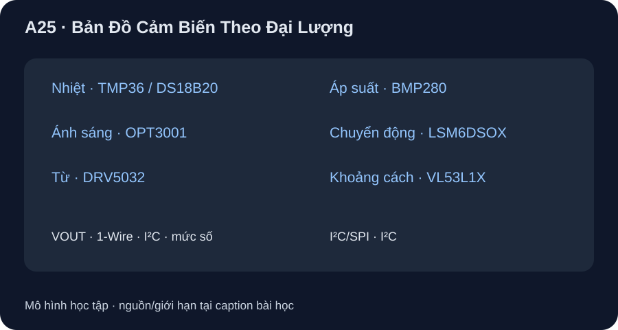

Bản Đồ Cảm Biến Theo Đại Lượng
Đọc đúng part, đơn vị, điều kiện thử và kiểu I/O trước khi chọn cảm biến.
- Lập ma trận đại lượng–nguyên lý–nguồn/I/O–dải–sai số/độ phân giải–đáp ứng cho bảy part thật.
- Phân biệt sai số với độ phân giải, thời gian đổi số với đáp ứng vật lý và silicon với breakout.
- Nêu ba việc phải xác nhận từ marking, package, board revision trước khi nối vào MCU.

Đọc hình bằng chữ
Nhiệt độ có TMP36 xuất điện áp analog và DS18B20 dùng bus 1-Wire. Ánh sáng OPT3001 xuất kết quả lux qua I²C. DRV5032 là công tắc Hall báo ngưỡng từ trường bằng mức số. BMP280 đo áp suất khí quyển bằng I²C/SPI. LSM6DSOX cho gia tốc và tốc độ góc. VL53L1X đo khoảng cách bằng thời gian bay quang học qua I²C. Các đường là nhóm dữ liệu, không nối chung bảy chip.
1. Bản đồ phải ghi điều kiện
Bảng dưới dùng IC trần theo datasheet hãng, chưa chọn breakout hay nối với Pico. “Không có số chung” nghĩa là đặc tính phụ thuộc package/cấu hình/môi trường hoặc thiết bị chỉ báo ngưỡng; không được tự điền số chính xác. Dải đo không phải dải nguồn, và độ phân giải không là độ chính xác.
| Đại lượng · part · nguyên lý | Nguồn và I/O | Dải/độ phân giải | Sai số và đáp ứng |
|---|---|---|---|
| Nhiệt · TMP36 · điện áp phụ thuộc nhiệt | 2,7–5,5 V; VOUT analog tới ADC phù hợp | −40…125 °C; 10 mV/°C danh định | ±1 °C ở 25 °C, ±2 °C toàn dải là typical; đáp ứng nhiệt phụ thuộc package, PCB, môi trường. Thời bật điện 0,5–1 ms không là τ nhiệt. |
| Nhiệt · DS18B20 · đo số tích hợp | VDD 3,0–5,5 V khi cấp riêng; 1-Wire | −55…125 °C; 12-bit LSB 0,0625 °C | ±0,5 °C ở −10…85 °C theo bảng; đổi số 12-bit tối đa 750 ms, chưa gồm thời gian nhiệt/bus. |
| Ánh sáng · OPT3001 · quang điện/lọc phổ | VDD 1,6–3,6 V; I²C, điện trở kéo lên theo miền I/O | Đến 83.865,6 lux full-scale; LSB 0,01 lux chỉ ở range thấp nhất | Phụ thuộc phổ/góc/cover glass; 100 hoặc 800 ms tích phân, auto-range có thể kéo dài. |
| Từ · DRV5032 · Hall switch | VCC 1,65–5,5 V; mức số open-drain hoặc push-pull theo mã | Ngưỡng BOP/BRP theo hậu tố part; không xuất trị số mT liên tục | Sai số là khoảng ngưỡng/hysteresis theo mã; phiên bản lấy mẫu 5/20/80 Hz, không là latency bảo đảm của mọi mã. |
| Áp suất · BMP280 · màng piezoresistive | VDD 1,71–3,6 V; VDDIO 1,2–3,6 V; I²C/SPI | 300–1100 hPa; độ phân giải output 0,0016 hPa ở mode ultra-high-resolution | Absolute accuracy typical ±1 hPa ở 950–1050 hPa, 0…40 °C; thời đo typical 5,5 ms ở preset ultra-low-power. |
| Chuyển động · LSM6DSOX · MEMS gia tốc/con quay | Analog supply 1,71–3,6 V; I²C/SPI/I3C theo mode | Gia tốc ±2/4/8/16 g; góc ±125/250/500/1000/2000 dps; sensitivity typical 0,061 mg/LSB tại ±2 g | Bias/noise còn riêng; ODR chọn theo mode (ví dụ 104 Hz), không phải độ trễ toàn hệ hay accuracy vị trí. |
| Khoảng cách · VL53L1X · time of flight | AVDD 2,6–3,5 V; I²C; I/O mặc định 1,8 V, mode 2,8 V cần cấu hình | Đảm bảo từ 4 cm; tới 4 m chỉ trong điều kiện mục tiêu/ánh sáng/timing thích hợp | Sai số phụ thuộc phản xạ, môi trường, cover glass; bảng thử hãng dùng timing budget 100 ms hoặc giá trị khác theo mode. |
2. Bài chọn nguồn và nhận diện
Đọc top marking, mã đặt hàng, package và revision board; mở pin configuration đúng góc nhìn trên datasheet. Ví dụ hình pin TO-92 của TMP36 nhìn từ đáy; không đổi nó thành mặt trước. Với DRV5032, hậu tố xác định ngưỡng, tần số lấy mẫu và output driver. Với VL53L1X trần, I²C mặc định 1,8 V: chưa xác định breakout/level shifter thì không nối thẳng bus 3,3 V của Pico. Datasheet silicon không chứng minh module bán lẻ có mạch chuyển mức hay regulator.
Chọn cảm biến đo nhiệt độ phòng và cảm biến phát hiện nam châm. Ghi đại lượng, unit, mã part/suffix/package, dải đo, supply/I/O, loại output, thông số sai số/độ phân giải, thời gian liên quan và từng điều kiện. Khoanh những ô phải đọc thêm khi biết PCB/module thực tế. Không vẽ chân header từ bảng IC trần.
Chưa có part/board/mã đặt hàng/breakout được kiểm. Bảng là hồ sơ học tập theo datasheet, không phải wiring/BOM đã duyệt. Bài A26–A27 phân tích trường hợp; P9-04 mới chọn một đường lab cụ thể.
Chọn TMP36 và DRV5032 từ bảng. Với mỗi part, nêu đại lượng, dạng output, nguồn, ‘độ phân giải hay ngưỡng’, yếu tố đáp ứng và ít nhất một điều chưa được phép suy về pinout/module. Vì sao không thể lấy 0,01 lux của OPT3001 làm độ chính xác?
- 1 điểm: TMP36 đo nhiệt bằng VOUT analog, 2,7–5,5 V, 10 mV/°C danh định; đáp ứng nhiệt phụ thuộc package/PCB/môi trường.
- 1 điểm: DRV5032 phát hiện ngưỡng từ trường qua output số; VCC 1,65–5,5 V, BOP/BRP và nhịp lấy mẫu phụ thuộc suffix, không có ‘độ phân giải mT’ của phép đo liên tục.
- 1 điểm: pinout TMP36 tùy package/góc nhìn và DRV5032 tùy suffix; chưa suy module có regulator/level shifter.
- 1 điểm: 0,01 lux là LSB ở range thấp nhất của OPT3001, trong khi sai số chịu phổ/góc/cover glass và điều kiện đo.